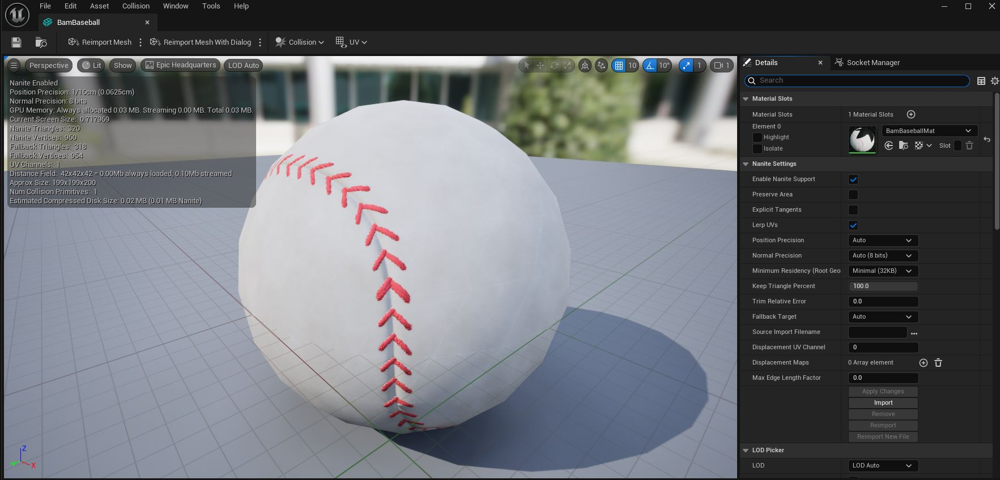
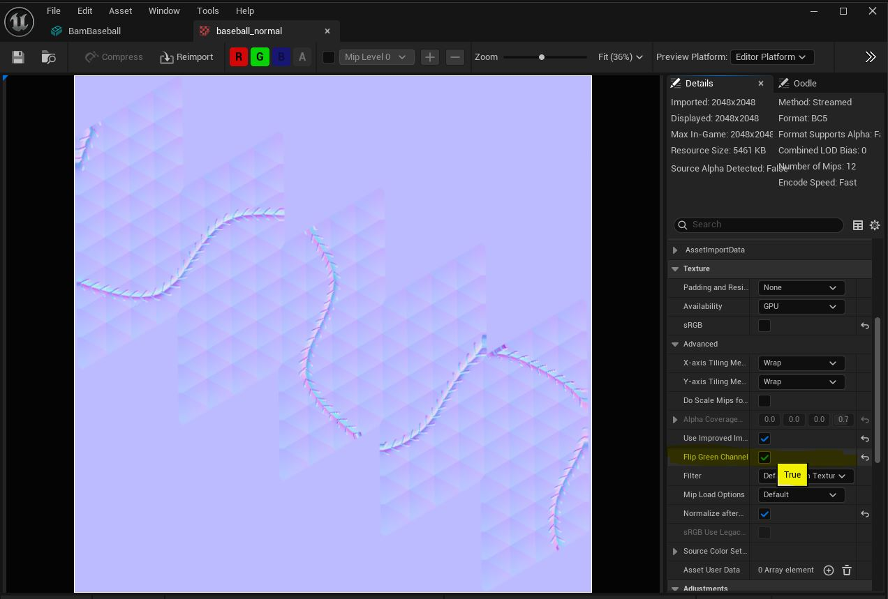
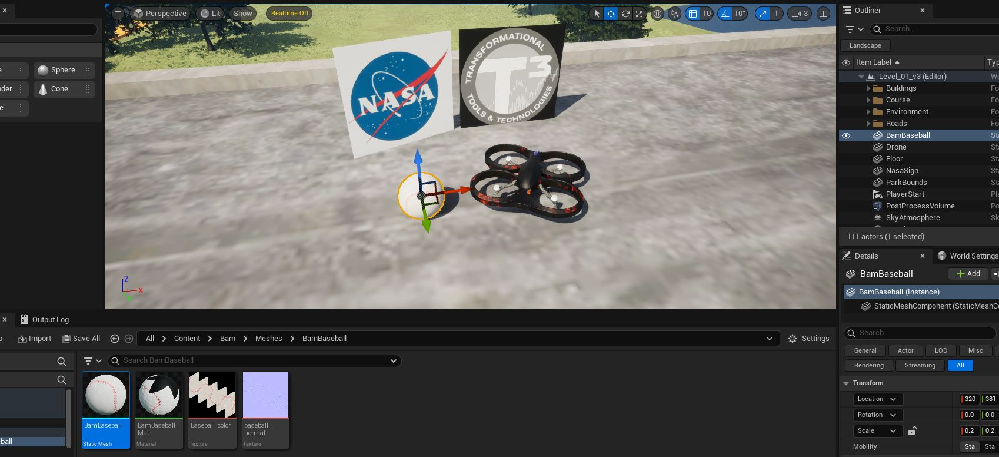

Back
BamEcho Version: 1.0
Scene Video Output
Sample
Sample “Scene” camera view from the front of Drone running off BAM
data.
Depth Video Output
Sample
Sample “DepthVis” camera view from the front of Drone running off BAM
data.
Overview
This tool is designed to automate the process of taking a
pregenerated BAM trajectory data file, transmitting the trajectories
contained to an Airsim Unreal Environment (one for the ownship drone and
one for the baseball), and then generate a video from the scene
created.
Getting Started
Generating videos with Bam Echo generally follows this process
Attain a flight run from BAM.
Run the flight data through genBamEchoScenario to
obtain CSV files that Echo uses to create the video frame by
frame.
Launch and run an Unreal Environment with Airsim. (configure
Airsim JSON file prior to launch for custom camera and sensors)
Run BamEcho with the CSV data files and all desired options to
generate video files.
Usage & Examples
The following is the standard format; two required parameters (the
trajectory files) followed by any options to be activated.
python BamEcho.py \<DroneTrajectory\> \<BaseballTrajectory\> [options]
Also valid, assuming No Baseball options have been set, is the following
where only one trajectory file argument is required:
python BamEcho.py \<DroneTrajectory\> [options]
Examples
python BamEcho.py Drone_Scen01.csv Baseball_Scen01.csv
- Simple use. Logs at a normal level. Uses Default values and naming
conventions.python BamEcho.py Drone_Scen02.csv Baseball_Scen02.csv -s
- Runs the program in Silent Mode.python BamEcho.py Drone_Scen03.csv Baseball_Scen03.csv -v -t MyScenarioTag
- Runs the program in verbose mode; sets a custom tag for the output
directories.python BamEcho.py Drone_Scen01.csv -noBB -rm - No
Baseball use. Just flys and records the multirotor, logs at a normal
level, and removes the image file directories after video processing.
Notice the second file argument is not required if no baseball mode is
used at the command line or in the json configuration file.
Options
- ‘-s’ - Silent Mode. Disables almost all text
output.
- ‘-v’ - Verbose Mode. The most detailed console
output available.
- ‘-t’ - Tag name. Allows user to set a custom string
tag for the generated output. Requires the user to input a string after
the option flag on the command line. Usage:
python BamEcho.py <file1> <file2> -t <StringTag>
- ‘-dt’- Debug Trajectory mode. This allows testing
of the trajectory visualization while disabling the time intensive image
collection and video export routines.
- ‘-noBB’- Disables all activities with the baseball
actor.
- ‘-rm’- Enable directory cleanup at the end; removes
all the generated frame images, leaving just the the videos.
Requirements & Assumptions
This script is critically dependent on several compatibility
assumptions with BAM and the chosen Unreal Airsim environment. A lack of
these items will likely result in failures by Echo or undefined
behavior.
Assumptions:
- Python 3+ installed
- ffmpeg installed and on your path.
- ffmpeg-python python module installed.
- Run within (or on path) with
Airsim/PythonClient.
- Bam Trajectories are given in CSV files with established format.
(see tool
genBamEchoScenario.m)
- An Airsim ready Unreal environment must be running. For more
information, see Airsim
Unreal Environment Supplemental.
- Unreal environment has an asset that is spawnable named
BamBaseball
- Unreal environment was configured with a JSON file that:
- Sets the camera resolution (like using CameraDefaultSettings)
- Instantiates at least one Airsim Multirotor vehicle named
‘Drone’
- Disables the Airsim physics by setting:
"PhysicsEngineName": "ExternalPhysicsEngine"
This tool’s speed is heavily dependent on two connected items: the
size of the camera resolution that is being captured (defaults are Front
Scene and Front Depth), and the number of cameras being captured. The
biggest computational demand is Client.simGetImages(), and
unfortunately it can’t be spun off in a thread because it would create a
race condition between what image is being captured and the scene being
actively updated by the main transmission logic.
Tips to speed up performance:
- Reduce resolution of target cameras.
- Reduce the number of cameras (dynamic camera system via
BameEcho.json).
- Headless mode on the environment (Not available on all platforms. I
haven’t tested this, but Airsim claims it works in Linux).
BamBaseball Integration
Bam produces and transmits a multirotor and a baseball trajectory
dataset into Airsim. To properly leverage this in Airsim, the user’s
environment needs to have an appropriate asset spawned that can be used
as a baseball. The BamEcho tool likewise needs to be able to move the
baseball around as it generates stills for the forthcoming video. Since
users have the flexibility to use whatever Unreal Environment that
Airsim has been dropped into, a common asset was created and provided to
fulfill BamEcho’s needs.
To integrate BamBaseball, do the following:
- Locate the asset file (FBX) under
/BamEcho/UnrealAssets/BamBaseball.7z and extract to a
desired location. The folder contents should contain the following:
Unzipped BamBaseball
Archive
- In Unreal Editor, create or select a folder location for the
imported BamBaseball object.
Create Baseball Asset
Folder
- Import the asset by selecting ‘Import Content’ from the ‘Add’ drop
down button in Unreal Editor, and then select
BamBaseball.fbx from
/BamEcho/UnrealAssets.
Import FBX Asset
Once completed the loaded asset should look like this:

- Open the normal map texture named ‘baseball_normal’ and check that
the ‘Flip Green Channel’ is enabled.

- Place an instance of the BamBaseball static mesh in the level. You
may chose to hide it, or just move it somewhere it cannot be seen. Note:
it seems important for the asset to be instantiated. Unreal only seems
to add instantiated assets to the asset list. It can not simply be left
in the level’s content drawer.

- Rebuild and run the environment. (BamEcho and Bam2Airsim will handle
appropriate spawning and scaling).
JSON Configuration File
The configuration file system allows for one place for holding and
setting the default values for parameters and options being used in
BamEcho; with the exception of the raw input files. The key feature that
most users will likely want to leverage is the camera view options. This
section will allow complete customization of which vehicle, camera, and
image type (within the capability of Bam and Airsim) will be captured
and processed into a video product. Below is a listing of the
parameters, explanation for each, and how to set them.
- LogLevel - (0-Silent, 1-Normal, 2-Verbose) - Sets the
verbosity of the logging during execution (tied to -s and -v options).
Valid values: 0-Silent, 1-Normal, 2-Verbose/
- ImageCapture - (true, false) - Flags whether the script
should capture images or not (useful if only testing trajectory
transmission).
- VideoExport - (true, false) - Enable or disable video
exporting at the end. Again, only really useful if testing data
transmission.
- IgnoreBaseball - (true, false) - Enable or disable the
transmission and processing of the Baseball actor. This is useful if
only concerned with the Drone’s behavior.
- CleanupFrames - (true, false) - Enable or disable the
deletion of generate image captures after execution. This is a space
saver if only concerned with the video output.
- CompressFrames - (true, false) - Enable or disable image
compression from captures on PNG formats.
- DefaultTag - (text) A simple text title that will serve as
the main part of the generated output folder. Default value is
“Echo”.
- VideoProcessing - The items in this section allow
configuration of the output video (may expand more in the future)
- InputFramerate - (0-100) - This expressed the expected
frame rate of the input files. Currently unused, but will be used in the
future for fine tunning ffmpeg.
- OutputFrameRate - (0-60) - This expressed the desired video
output framerate. It can really be any positive integer, but really the
20-30 range the best bang for the buck.
- QualityFactor - 5 - Lower numbers seem to be less lossy,
but produce huge videos. Higher numbers produce small but grainy videos.
Five is the recommended selection.
- CameraViews - These items let the user set the basic
cameras and image types they want captured and exported to video
ultimate. Only the Scene and Depth cameras have been experimented with.
The other Airsim supported cameras may require additional processing be
added.
- Target - (“Drone”) Currently the system only supports one
multirotor named Drone, but in the future this could be any known Airsim
vehicle with onboard cameras.
- Camera - (See Airsim documentation,
https://microsoft.github.io/AirSim/) This is the name or number value of
an onboard camera of the target vehicle. The default used is
‘front_center’ or 0.
- Type - (See Airsim documentation) This list is the the
image types (vision types) that will be capture for this camera on this
target vehicle. The defaults are “Scene” and “DepthVis”.
Note: The resolution for camera capture is actually
configured in the main Airsim.json file for the Unreal environment. If
the user wishes to up or downgrade image quality, it must be done there
for now.
Obtaining BamEcho Scenario
Data
Echo data is obtained by generating properly formatted CSV files from
output data created by the BAM simulation in Matlab / Simulink or the
autocoded BAM executable.
Configure and run BAM with the desired Ownship and Baseball
criteria.
Once BAM has completed, run the tool
genBamEchoScenario with the following inputs
- SimInData - The structure of simulation input data; it
should be in the main workspace called
SimIn unless
something went wrong.
- SimOutData - The structure of values obtained from
simout.logsout{1}.Values. simout can be found in the main
workspace after BAM runs.
- framerate - (optional, default=24) - The rate at which
frames are generated per second using the simulation dataset.
- tagString - (optional, default=’’) - A string that will be
included in the filename to customize it for recognition purposes.
- doBaseball- (optional, default=logical(1)) - Flag to enable
/ disable baseball file generation. ECHO is off. Example
Usage:
Matlab>> genBamEchoScenario(SimIn, simOut.logsout{1}.Values);
Result: Two files in the CWD of Matlab formatted as
such: ECHO is off.
- BamScn_timestamp_multirotor.csv
- BamScn_timestamp_baseball.csv ECHO is off.
Move files to a directory of your preference (like the BamEcho
working directory), and use the files as appropriate in the command line
arguments for BamEcho as described above.
Ongoing & Future Work
- Dynamic video configuration
- Multi-vehicle support
Daniel R. Hill - daniel.r.hill@nasa.gov
Version History
- 0.90 - Initial Beta. Handles basic CSV parsing,
transmission of Drone and baseball positions to Airsim, screen grabs of
Scene and Depth cameras onboard the Drone vehicle, and exporting video
to AVI via ffmpeg.
- 0.95 - Added BamBaseball asset for Unreal
Environments. Added the ability to create PFM videos with FFMpeg. Skip
baseball option. Threading for Image saving. Image file cleanup after
option.
- 0.99 - Added JSON configuration file and dynamic
camera view system. Allows the user more up front visibility to the
options available in Echo, and a way to setup the desired camera views
that will be exported to video. Defaults are set as the current Dev
preferences. The camera views beyond Scene and Depth are nominally
available, but have not been tested. There may need to be additional
handling and processing logic implemented to handle the more complex
views Airsim provides (Done as needs arise.).
- 1.00 - Full integration with baseball trajectory
data. Scenario data validation.
Back
{kind=link}
{kind=link}
{kind=link}